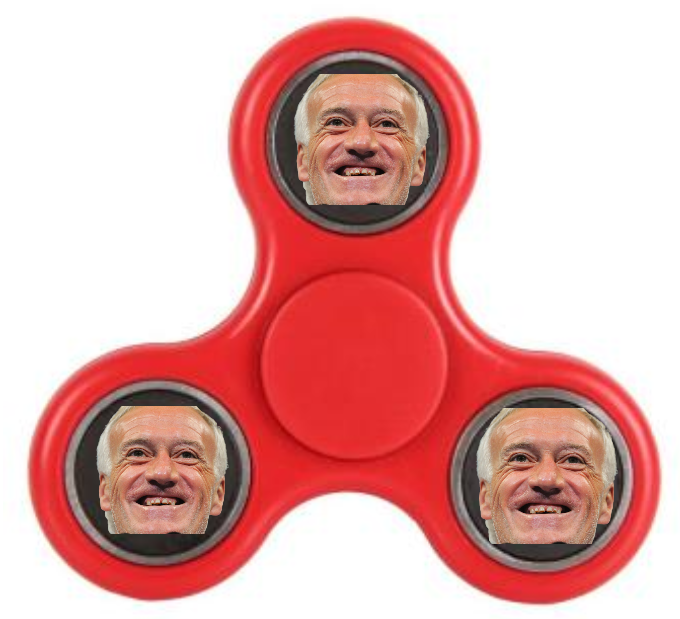

Allez sur la page de démo corresondant à votre container:
Page 1 Page 2 Page 3 Page 4 Page 5 Page 6 Page 7 Page 8 Page 9 Page 10Didier Deschamps, né le 15 octobre 1968 à Bayonne (France), est un footballeur international français devenu entraîneur. Depuis 2012, il est le sélectionneur de l'équipe de France.
Après avoir intégré le centre de formation du FC Nantes en 1983, il s'installe rapidement au poste de milieu défensif. Au terme de cinq années passées sous les couleurs nantaises, il est transféré à l'Olympique de Marseille. Prêté aux Girondins de Bordeaux lors de la saison 1990-1991, il revient à Marseille avec lequel il remporte la Ligue des champions 1993, devenant à ce jour le seul capitaine d'un club français à prendre en mains la Coupe aux grandes oreilles. Avec l'OM, il gagne aussi deux titres de champion de France (1990 et 1992). En 1994, il rejoint la Juventus de Turin où il joue quatre finales européennes consécutives, remportant notamment la Ligue des champions 1996 ainsi que trois Serie A (1995, 1997, 1998). Il signe à Chelsea en 1999, puis à Valence en 2000 où il prend sa retraite de joueur.
Cliquez ici pour bénéficier de 10% de promotion sur le handspinner Didier DeschampsSélectionné à 103 reprises (record français entre 1999 et 2003) et 54 fois capitaine de l'équipe de France3 (record français entre 1996 et 2016), entre 1989 et 2000, Didier Deschamps s'impose comme le relais sur le terrain de l'entraîneur Aimé Jacquet de 1994 à 1998. Avec les Bleus, il gagne la Coupe du monde 1998 et le Championnat d'Europe 2000.
Il fait partie de la FIFA 100, une liste des plus grands footballeurs vivants, publiée en 2004 pour le centenaire de la Fédération internationale de football association (FIFA), signée par Pelé, considéré comme le meilleur joueur de football du xxe siècle4. Il est le deuxième joueur après Franz Beckenbauer à avoir gagné en tant que capitaine, la coupe du monde, le championnat d'Europe des nations et la ligue des champions.
Il devient entraîneur en 2001 avec l'AS Monaco, club avec lequel il dispute la finale de Ligue des champions 2004. En 2006, il entraîne pendant une saison la Juventus reléguée administrativement en Serie B qu'il fait remonter malgré la sanction de retard de points à l'entame de la saison. Après une pause de deux ans, il revient à l'OM où il remporte le titre de champion de France 2010 ainsi que trois coupes de la ligue.
Il prend les rênes de l'équipe de France en 2012 et atteint les quarts de finale de la Coupe du monde 2014 au Brésil puis la finale de l'Euro 2016, perdue en prolongation face au Portugal (1-0). Le 15 juillet 2018 à Moscou, Didier Deschamps parvient à mener l'équipe de France à la victoire en finale de la Coupe du monde 2018, remportant le trophée au terme du match face à la Croatie (4-2). Il devient ainsi l'une des trois personnalités du football, avec le Brésilien Mário Zagallo et l'Allemand Franz Beckenbauer (le deuxième après ce dernier en tant que capitaine), à avoir soulevé le trophée en tant que joueur puis sélectionneur
Puis, le gamin d’Anglet entre au collège catholique Saint-Bernard à Bayonne. Entre le catéchisme et la révision de ses cours, Didier découvre le sport avec ses amis. Il dribble à la récré, sur le petit terrain de l’établissement privé et s’essaie aussi à la natation, au cross-country et au demi-fond grâce à l’UNSS. En cinquième, dans la catégorie Minimes, il est sacré champion de France scolaires sur le 1 000 mètres. Didier touche aussi au handball, au saut en longueur et au rugby. Il déclare en 1985 : « J'ai arrêté le rugby lorsque je me suis aperçu qu'autour de moi, ils étaient beaucoup plus grands »7. Mais aussi aux parties de « mur à gauche », spécialité de pelote basque8,9, avec son père sur le fronton de Saint-Pierre-d'Irube. Il a onze ans quand il décide de tenter le football. « Je ne vais pas signer aux Genêts d’Anglet, lâche-t-il à ses parents sidérés. Aucun joueur ne sort de là-bas ! » L’Aviron bayonnais, qu'il décide d'intégrer, a lui vu débuter Christian Sarramagna, Félix Lacuesta ou Jean-Louis Cazes
Les dirigeants de l’Aviron sont tout de suite ébahis par Didier, Jacques Sorin en tête : « Il devait être Pupilles 2, mais il était grand, rapide et beaucoup plus costaud que les gamins de son âge. Il a tout de suite intégré l’équipe Minimes ». Attaquant, il inscrit but sur but. « Il s’est tout de suite transformé en patron sur le terrain, poursuit le dirigeant basque. Didier avait l’ascendant sur ses copains, même plus âgés. Il ne cherchait pas à s’imposer, c’était naturel chez lui ». Tout de suite surclassé, il connaît les différentes sélections : départementales, régionales et bientôt nationales. En Minimes 2, il endosse, en déplacement, son premier maillot bleu en Belgique (0-0). En bon capitaine, devenu milieu de terrain, il brandit en 1982 la Coupe nationale Minimes en Ligue d'Aquitaine. Une dizaine de clubs se manifestent, mais Pierre Garonnaire est le premier sur le coup. Le dénicheur de talents de l’AS Saint-Étienne lui propose une semaine de stage dans le Forez. « J’y suis allé avec Monsieur Sorin, pendant les vacances de Pâques. Les installations me plaisaient. Malheureusement, quelques jours après mon séjour stéphanois, l’affaire de la caisse noire a éclaté (avril 1982)
Le contact est rompu avec l’ASSE et les Girondins de Bordeaux tentent alors une approche cavalièrenote 1. Plus tard, il répond à l’invitation du FC Nantes qui lui propose de venir assister à un match. Avec ses parents, Didier visite le centre de formation à La Jonelière. Le Basque s’installe à Nantes à l'été 1982, sans passer par l'AJ Auxerre qui, par l’intermédiaire de l’incontournable Guy Roux, multiplie les appels du pied. « Mes parents ont été formidables. Ils m’ont laissé choisir. J’ai opté pour le FCN parce que ce club me donnait des certitudes au niveau scolaire9. Mais, dans ma tête, les choses étaient désormais bien définies : je voulais décrocher un premier contrat professionnel »6. Il y côtoie Marcel Desailly qui sera plus tard son coéquipier à l'Olympique de Marseille, à Chelsea mais aussi en équipe de France.
Didier Deschamps vit des premiers mois à Nantes pénibles. « Robert Budzynski m’avait fait trop de pub. Je passais pour le petit prodige et cela a suscité de la jalousie ». Timide et réservé, il est le souffre-douleur des plus anciens, dont certains ont quatre ans de plus que lui. L’hebdomadaire Pif Gadget lui consacre un article le présentant comme un grand espoir du football français, ce qui n'aide pas. Il vit en marge, s’enferme dans sa chambre après les entraînements, bosse une seconde qu’il prépare par correspondance. Il s’accroche et ne se plaint jamais pour ne pas affoler ses parents. Au bout de six mois, le jeune Deschamps est définitivement accepté. Il se lie d'amitié avec Marcel Desailly, le nouveau copain et bientôt le confident. Côté terrain, Didier débute avec les cadets nationaux de Raynald Denoueix, d’abord milieu de terrain, puis libéro. Il passe de deux entraînements par semaine à deux par jour. En 1984, il est finaliste de la Coupe Paul-Nicolas, contre Bordeaux, et demi-finaliste de la Gambardella la saison suivante. Chaque mois, ses parents montent faire le point avec Budzinski, le directeur sportif du FCN : « Il nous tenait régulièrement le même discours, raconte M. Deschamps. Si Didier n’a pas de pépins physiques, il sera pro et jouera en équipe de France !
Dès 1987, le protégé de Suaudeau paraphe son premier contrat professionnel et le voilà capitaine à 19 ans. Au poste de défenseur central, il avale une saison pleine et inscrit son premier but en L1, le 1er septembre 1987, contre l’Olympique de Marseille. « J’évoluais avec deux stoppeurs, Desailly et Antoine Kombouaré. Ce poste, je l’aimais bien. Il m’a beaucoup apporté par la suite, notamment parce qu’à l’époque, j’étais toujours face au jeu ». Recadré milieu défensif, on le compare alors à Henri Michel à la Beaujoire. Bien dans sa tête, Didier s’épanouit pleinement en jaune et vert malgré deux décès successifs dans sa famille
